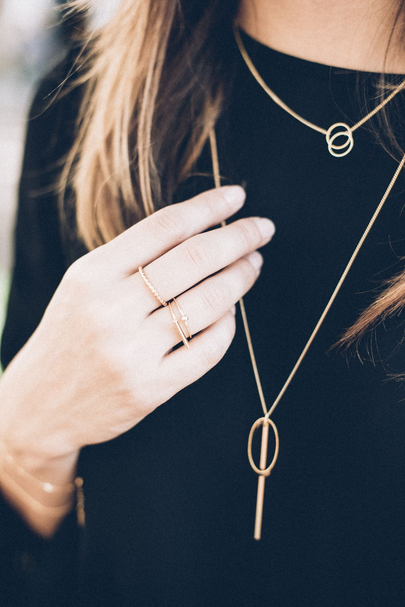
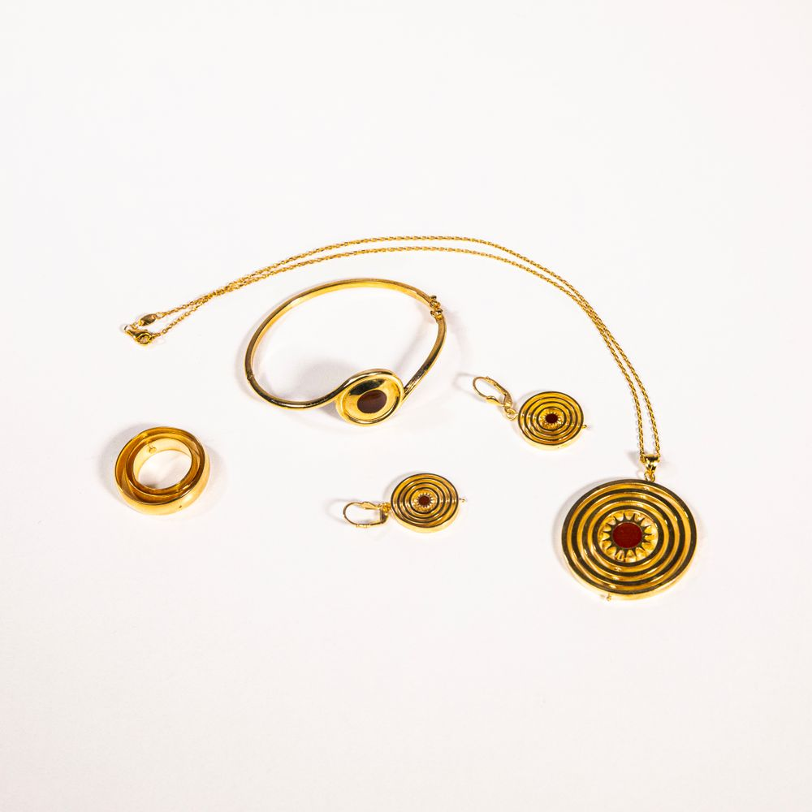

JOALHERIA · ORLA ATELIER
Joias junto
de você.
Todos os dias.
Entre linhas delicadas e formas orgânicas, um olhar para os detalhes que acompanham o seu jeito.

O detalhe faz parte de você.
ORLA ATELIER01 / A SELEÇÃO
Um encontro
com o seu estilo.
Anéis, colares e brincos vistos de perto. Uma seleção fotográfica para explorar proporções, texturas e formas.

02 / O OLHAR DA ORLA
Presença nos
pequenos detalhes.
Uma curva, um reflexo, um encontro de texturas. A Orla aproxima a joia do cotidiano por meio de uma direção visual leve e acolhedora.
Esta é uma marca fictícia criada como estudo de identidade e experiência digital. As fotografias de acervo apresentam referências de joalheria e não representam produtos à venda.
Conhecer o projeto03 / DÚVIDAS
Antes de
continuar.
Um pouco mais sobre a seleção
e a proposta deste atelier.
As joias estão à venda?
Não. A Orla Atelier é uma demonstração de portfólio, sem loja, pedidos ou comercialização.
De onde são as fotografias?
São imagens de acervo do Pexels, selecionadas para este estudo visual. Os créditos estão no rodapé.
Qual é a proposta da Orla?
Explorar uma apresentação digital de joalheria com fotografia, tipografia clara e uma navegação simples entre a seleção e a identidade da marca.